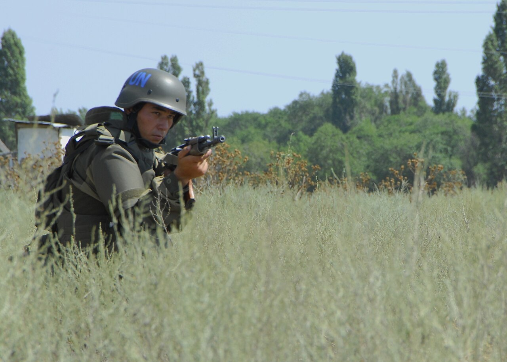

Әскери негіздер · №7 · Міндеттер Military Basics · No.7 · Duties Воинские основы · №7 · Обязанности
Әрбір жауынгер мен сақшы өз міндеттерін мүлтіксіз орындайды. Every soldier and sentry carries out their duties without fail. Каждый солдат и часовой безупречно выполняют свои обязанности.

Әскери қызметші — әскери қызметте тұрған және әскери ант берген азамат. Оның міндеттері үш топқа бөлінеді: жалпы (барлық қызметшіге ортақ), лауазымдық (нақты қызмет бабымен айқындалған) және арнайы (қарауыл, наряд, ұрыс кезегі сияқты уақытша тапсырмалардан туындайтын). Бұл міндеттер бір мақсатқа қызмет етеді — әскердің тәртібін, басқарылуын және жауынгерлік әзірлігін қамтамасыз ету. A serviceman is a citizen who is on active military service and has taken the military oath. His obligations fall into three groups: general (common to all servicemen), duty-related (defined by the specific post he holds) and special (arising from temporary tasks such as guard, daily detail or combat duty). All of them serve one aim — to maintain the discipline, command and combat readiness of the troops. Военнослужащий — гражданин, состоящий на действительной военной службе и принявший военную присягу. Его обязанности делятся на три группы: общие (единые для всех военнослужащих), должностные (определяются конкретной должностью) и специальные (возникают из временных задач — караула, наряда, боевого дежурства). Все они служат одной цели — обеспечить дисциплину, управляемость и боевую готовность войск.
Сақшы — өзіне тапсырылған постты күзету және қорғау бойынша жауынгерлік міндетті қарумен атқаратын қарауылшы. Ол өз постында қол сұғылмайтын тұлға болып саналады: оның құқықтары мен абыройы заңмен ерекше қорғалады.Sentry — an armed guard performing the combat task of guarding and defending the post entrusted to him. While on his post he is regarded as an inviolable person: his rights and dignity are specially protected by law.Часовой — вооружённый караульный, выполняющий боевую задачу по охране и обороне порученного ему поста. На посту он считается лицом неприкосновенным: его права и достоинство особо охраняются законом.
Сақшы постта тұрғанда тек қарауыл бастығына, оның көмекшісіне және өзінің бөлушісіне бағынады — басқа ешкімге емес. Сақшының заңды талаптары постқа жақындаған барлық адам үшін, лауазымына қарамастан, орындалуға міндетті.On post the sentry obeys only the guard chief, his assistant and his own relief commander — and no one else. The sentry's lawful demands are binding on everyone who approaches the post, regardless of rank.На посту часовой подчиняется только начальнику караула, его помощнику и своему разводящему — и никому более. Законные требования часового обязательны для каждого, кто приближается к посту, независимо от должности.
| №No.№ | Тыйым салынған әрекетProhibited actionЗапрещённое действие |
|---|---|
| 1 | ұйықтау, отыру, бір нәрсеге сүйену немесе жату;sleep, sit down, lean against anything or lie down;спать, сидеть, прислоняться к чему-либо или ложиться; |
| 2 | алаңдау, тамақ ішу, су ішу, ән айту, темекі шегу, бөгде адаммен сөйлесу;be distracted, eat, drink, sing, smoke or talk with outsiders;отвлекаться, есть, пить, петь, курить, разговаривать с посторонними; |
| 3 | постта табиғи қажеттіліктерін өтеу;relieve natural needs while on the post;справлять естественные надобности на посту; |
| 4 | кез келген заттарды біреуге беру немесе біреуден қабылдау;hand over or receive any objects from anyone;передавать или принимать от кого-либо какие-либо предметы; |
| 5 | қаруды оқтан босату немесе бөлшектеу.unload or disassemble the weapon.разряжать или разбирать оружие. |